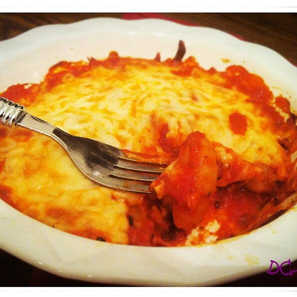

Back

This baked gnocchi is simple, fast, and delicious.
Ingredients
- 4 ounces shelf-stable gnocchi
- ⅓ cup pasta sauce
- ¼ cup shredded mozzarella cheese, or to taste
Directions
- Bring a large pot of lightly salted water to a boil. Cook gnocchi in the boiling water until they float to the top, about 3 minutes. Drain.
- Preheat the oven to 350 degrees F (175 degrees C).
- Spread 1/2 of the pasta sauce on the bottom of a 5-inch round casserole dish. Layer with gnocchi and spread the remaining pasta sauce on top. Sprinkle with mozzarella cheese.
- Bake in the preheated oven until cheese is melted and bubbling, about 25 minutes.